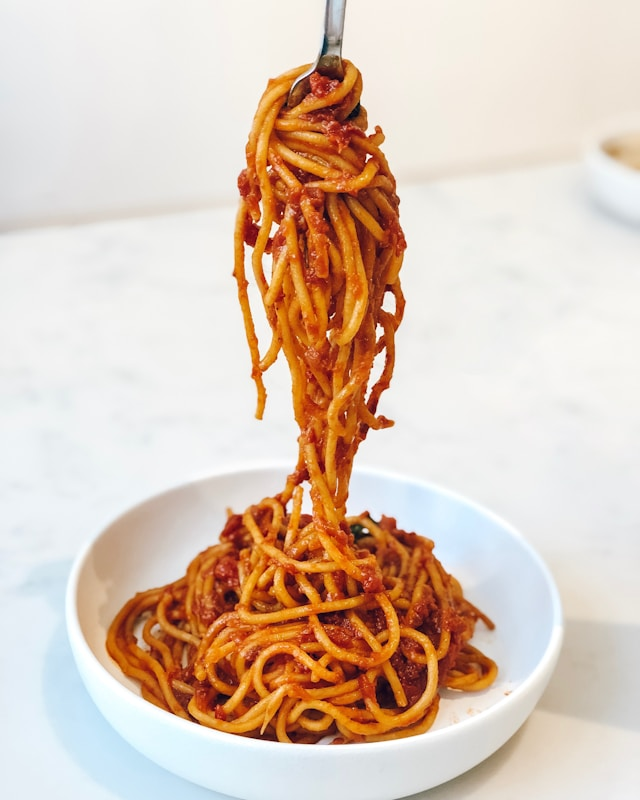

Spaghetti
I love this spaghetti recipe because it's comforting, quick, and always satisfying. It's one of those dishes that brings everyone to the table — simple ingredients, rich flavor, and perfect for any night of the week.
Ingredients
- 8 ounces (about half a box) of spaghetti
- 1 tablespoon olive oil
- 1 pound ground beef
- 1 small onion, finely chopped
- 2 cloves garlic, minced
- 1 (24-ounce) jar of spaghetti sauce
- 1/2 teaspoon salt
- 1/4 teaspoon black pepper
- 1 teaspoon Italian seasoning (optional)
- Grated Parmesan cheese for topping
Instructions
- Bring a large pot of salted water to a boil. Add spaghetti and cook according to package directions until al dente. Drain and set aside.
- In a large skillet, heat olive oil over medium heat. Add the ground beef and cook until browned, breaking it apart as it cooks. Drain any extra fat.
- Stir in chopped onion and minced garlic. Cook for 2-3 minutes until softened and fragrant.
- Pour in the spaghetti sauce, then add salt, pepper, and Italian seasoning. Simmer for 10-15 minutes to blend the flavors.
- Toss the cooked spaghetti into the sauce or serve the sauce on top. Sprinkle with Parmesan cheese before serving.